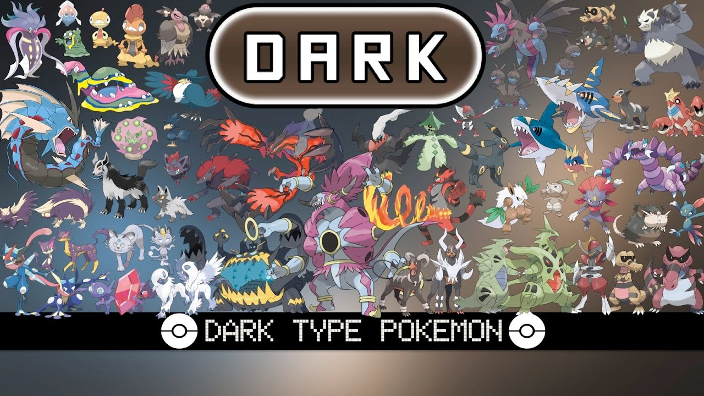
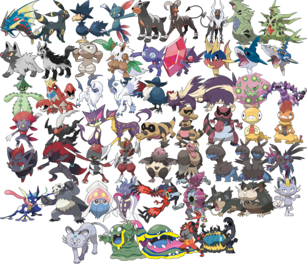

Dark-type Pokémon are notorious for their enigmatic allure and often sinister appearance. These Pokémon possess a unique charm that resonates with trainers drawn to their mysterious and sometimes edgy demeanor. One such Pokémon is Umbreon, an embodiment of elegance cloaked in darkness. Its sleek black fur and glowing golden rings evoke an aura of mystique, while its keen senses and agility make it a formidable opponent in battles. Another intriguing dark-type is Absol, often depicted as a harbinger of disaster due to its ability to sense impending calamities. Its stark white fur contrasting with the deep black of its body creates an image of an otherworldly guardian, misunderstood by those who fear its presence. Absol's enigmatic nature appeals to trainers who seek to unravel its mysteries and harness its power for protection rather than destruction. Among the more eerie dark-types is Sableye, a mischievous creature with gem-like eyes that gleam in the dark. Known for its penchant for stealing jewels and its immunity to normal type moves, Sableye embodies the trickster archetype in the Pokémon world. Its ghostly appearance and penchant for lurking in shadows add to its mystique, making it both a curious companion and a cunning adversary. Additionally, the Umbra Cat Pokémon, Liepard, exemplifies the dark type with its sly and stealthy nature. It prowls through the shadows with feline grace, using its keen senses and razor-sharp claws to swiftly defeat opponents. Liepard's sleek black fur and piercing yellow eyes give it an air of danger and sophistication, appealing to trainers who appreciate its cunning tactics and swift agility in battle. Dark-type Pokémon not only challenge trainers with their unique abilities and strategic advantages but also fascinate with their complex personalities and darkly elegant designs. Whether portrayed as guardians, tricksters, or enigmatic beings of the night, these Pokémon captivate the imagination and add depth to the Pokémon universe, embodying the allure of the unknown and the thrill of mastering their shadowy powers.
 